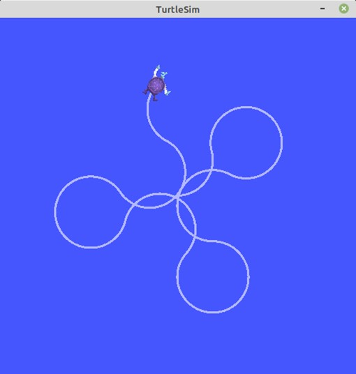
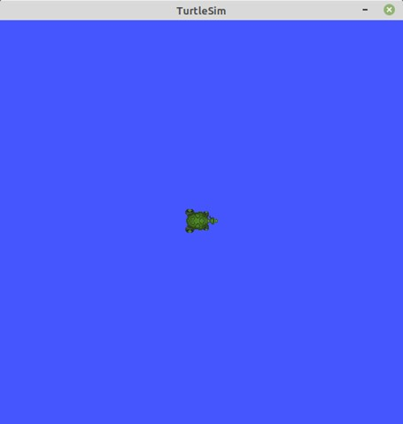
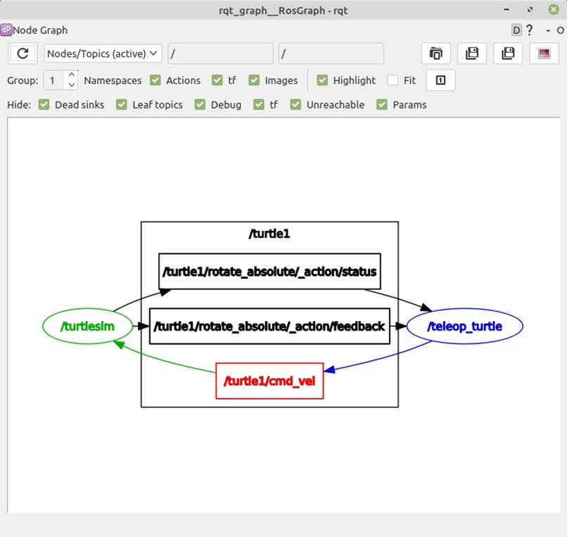
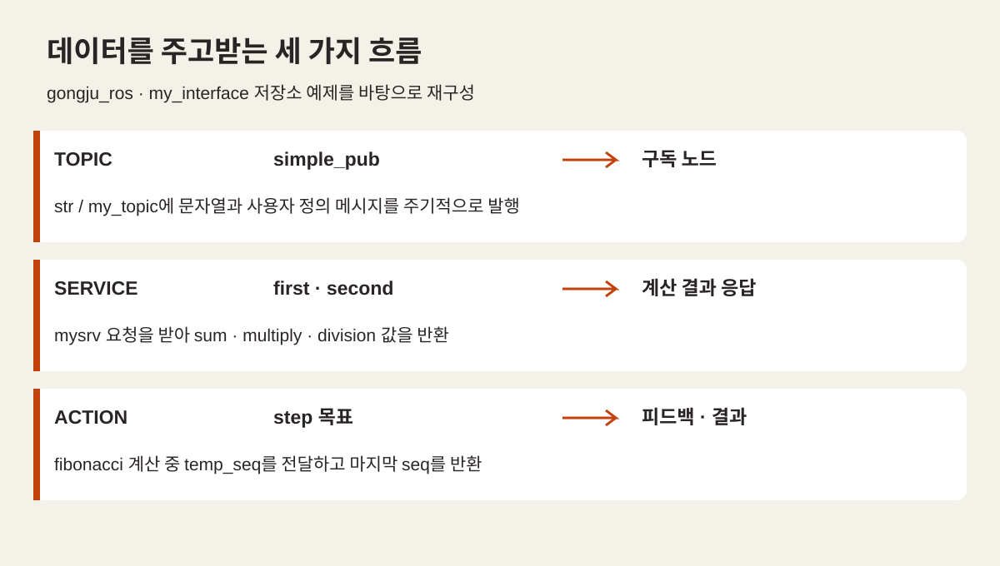
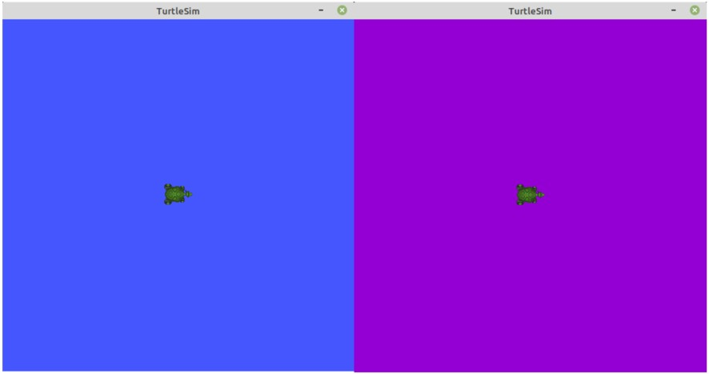
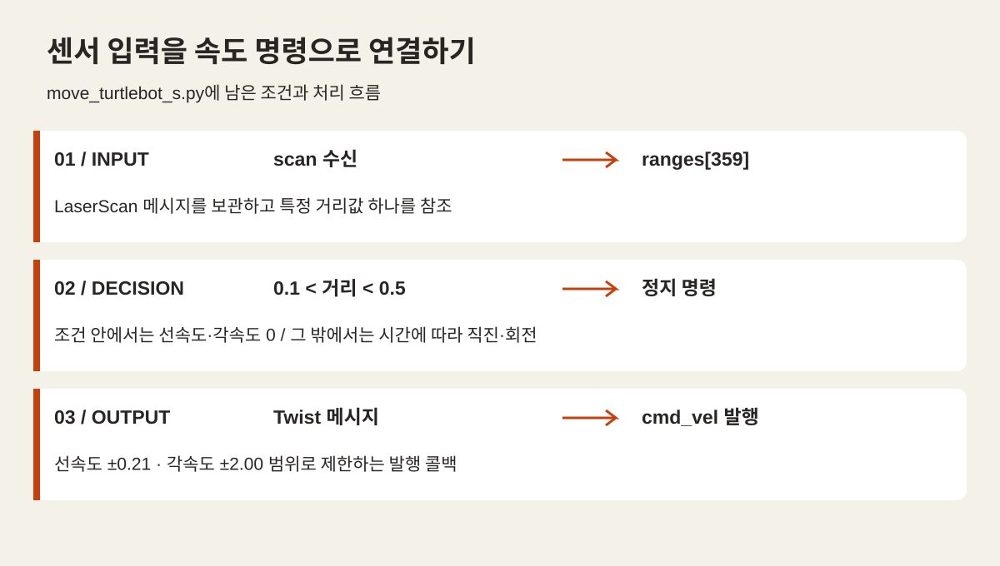

OFFLINE EDUCATION / GONGJU 2024
첫 노드에서
로봇의 움직임까지
turtlesim에서 토픽·서비스·액션, 파라미터와 TurtleBot3 센서 제어까지. 공주대 2024년 ROS2 교육의 저장소와 교재로 살펴보는 실습 흐름입니다.
명령을 보내는 일에서
노드를 연결하는 일로
거북이 한 마리를 움직이는 화면에서 시작해, 메시지를 보내는 노드와 받는 노드를 나눕니다. 값을 요청하고, 처리 과정을 확인하고, 센서 입력을 속도 명령으로 이어 보는 흐름입니다.
공주대 교육 폴더에 보관된 교재와 공개 저장소의 예제를 다섯 주제로 정리했습니다. README에는 1월 22일 ROS2 개요와 개발 환경 준비 기록이 남아 있습니다.

크게 보기 ↗교재에 수록된 직진·회전 속도 변경 예시입니다. 당시 교육생의 결과물이나 현장 촬영 사진은 아닙니다.
- 확인 가능한 기록
- 2024.01.22 README
1월 26일 저장소 커밋 - 핵심 예제
- gongju_ros · my_interface
통신·설정·센서 제어 - 이번 글의 범위
- 저장소와 교재의 학습 내용
전체 교육기간과 구분
ROS2 / LEARNING RECORD
환경을 준비하고 첫 노드 실행하기
교육 저장소의 첫 기록은 ROS2 개요, 가상머신과 Ubuntu 개발 환경 준비입니다. 프로그램이 실행될 환경을 마련한 뒤 turtlesim으로 화면과 노드가 함께 동작하는지 살펴보는 구성입니다.
교재에서는 노드를 실행하는 명령과 실행 중인 노드·토픽을 조회하는 명령을 연결합니다. 화면이 떴다는 확인에서 한 걸음 더 나아가, 어떤 이름의 노드가 어떤 메시지를 주고받는지 읽는 연습입니다.
보관된 계획서에는 Ubuntu 20.04·Foxy, README에는 Ubuntu 22.04 계열의 표기가 함께 남아 있습니다. 이 글에서는 당시 자료의 실습 구조를 소개하며, 서로 다른 버전 표기를 하나의 확정 설치 환경으로 합치지 않았습니다.

크게 보기 ↗교재 4-2-2의 turtlesim 실행 예시. 화면 실행 뒤 노드와 토픽을 확인하는 실습으로 이어집니다.
ROS2 / LEARNING RECORD
토픽으로 연결하고 움직임 만들기
simple_pub.py는 타이머를 이용해 문자열 토픽 str과 사용자 정의 메시지 토픽 my_topic을 발행합니다. my_interface의 메시지 정의와 구독 코드를 함께 보면 데이터의 이름뿐 아니라 필드와 타입까지 맞춰야 한다는 점을 확인할 수 있습니다.
move_turtlesim.py는 두 거북이의 cmd_vel 토픽으로 Twist 메시지를 보냅니다. 첫 번째는 일정 시간 직진한 뒤 회전하고, 두 번째는 선속도와 각속도를 함께 주는 방식입니다. 메시지의 값이 달라지면 화면 위 경로도 달라집니다.
교재의 rqt_graph 화면은 입력 노드에서 나온 명령이 어디로 전달되는지 보여줍니다. 저장소의 Python 예제와 나란히 보면 발행·구독 코드가 실제 연결 관계로 어떻게 표현되는지 읽을 수 있습니다.

크게 보기 ↗교재 4-2-2의 rqt_graph 화면. teleop_turtle에서 발행한 cmd_vel을 turtlesim이 구독하는 관계를 보여줍니다.
ROS2 / LEARNING RECORD
서비스·액션으로 요청과 결과 다루기
계속 보내는 데이터와 요청에 답하는 계산은 서로 다른 흐름을 갖습니다. simple_service_server.py는 두 정수를 받아 합·곱·나눗셈 결과를 돌려주고, 0으로 나누는 경우를 별도로 처리합니다. 요청과 응답의 필드는 Mysrv.srv에 정의되어 있습니다.
액션 예제는 피보나치 수열 계산을 사용합니다. 요청한 step에 따라 계산하면서 temp_seq로 중간 피드백을 보내고, 완료한 수열은 seq로 반환합니다. 하나의 결과를 받기 전에도 처리 과정을 확인할 수 있다는 차이를 작은 예제로 드러냅니다.
수업 자료를 읽을 때에는 서버 코드와 인터페이스 파일을 함께 보는 것이 유용합니다. 입력·중간 상태·최종 결과의 경계를 확인하면 같은 통신 구조를 로봇의 이동 목표나 반복 작업에도 연결해 생각할 수 있습니다.

크게 보기 ↗문자열·사용자 정의 메시지, 두 수의 연산 서비스, 피보나치 액션 예제를 묶은 설명도입니다. 원본 코드를 읽어 재구성했으며 실행 결과 화면은 아닙니다.
ROS2 / LEARNING RECORD
파라미터와 launch로 실행 구성하기
같은 프로그램도 설정값에 따라 동작과 표현이 달라집니다. 교재는 turtlesim 배경색을 읽고 바꾸는 예시로 파라미터를 설명하고, 저장소의 move_turtlesim.py는 myparam을 선언하고 변경 콜백에서 값을 갱신하는 코드를 담고 있습니다.
launch 파일은 관련 실행을 한곳에 모읍니다. 저장소의 move_tutle.launch.py는 turtlesim과 이동 노드를 구성하고, YAML 파일을 파라미터로 전달하며, 추가 거북이를 생성하는 서비스 호출도 포함합니다. 파일 이름의 tutle 표기는 원본 그대로입니다.
실행 파일을 나열하는 것에서 더 나아가 어떤 설정 파일을 읽는지 추적하는 단계입니다. 이 글은 해당 구성을 정적으로 확인했으며, 노드 시작 순서나 서비스 준비 시점까지 새로 실행 검증한 것은 아닙니다.

크게 보기 ↗교재 5-5의 파라미터 예시. 배경색 변경을 통해 노드의 설정값을 읽고 바꾸는 개념을 설명합니다.
ROS2 / LEARNING RECORD
거리·영상 데이터를 로봇 코드로 연결하기
로봇 이동 예제에서는 화면 속 위치 대신 센서 메시지가 판단의 입력이 됩니다. move_turtlebot_s.py는 scan 토픽의 LaserScan을 받고 cmd_vel에 Twist를 발행합니다. ranges[359]의 값이 0.1과 0.5 사이일 때 정지하고, 그 밖에서는 시간에 따라 직진과 회전 명령을 갱신합니다.
이는 센서 입력과 이동 출력을 연결하는 기초 예제입니다. 특정 배열 원소 하나를 참조하며 유효하지 않은 거리값이나 전체 주변 장애물을 포괄적으로 판단하지 않으므로, 완성된 장애물 회피 또는 자율주행 결과로 소개하지 않습니다.
영상 예제 simple_image_sub.py는 /camera/image/compressed를 구독하고 CvBridge로 OpenCV 영상으로 변환해 표시합니다. 거리와 영상이라는 서로 다른 센서도 메시지를 받고 콜백에서 처리한다는 공통 구조로 이어집니다.

크게 보기 ↗원본의 단일 거리값 조건을 그대로 요약했습니다. 전체 장애물 회피나 자율주행 완성을 나타내는 그림은 아닙니다.
교육 기록과 예제를 함께 읽기
이 글은 공개 저장소의 2024년 1월 26일 커밋과 공주대 2024 교육 폴더에 보관된 교재·계획서를 대조해 작성했습니다. README의 1월 22일 기록과 코드 보관 시점은 확인되지만, 계획서에는 다른 날짜·버전 표기가 남아 있어 전체 운영기간이나 차시별 실제 진도를 확정하지 않았습니다.
교재 그림 네 장은 교재에 수록된 설명용 화면이며 현장 사진이나 교육생 수행 증빙으로 사용하지 않았습니다. 통신과 센서 흐름 그림 두 장은 공개 예제 코드를 바탕으로 재구성했습니다. 교육생 명단과 개인 연락처는 게시하지 않았습니다.